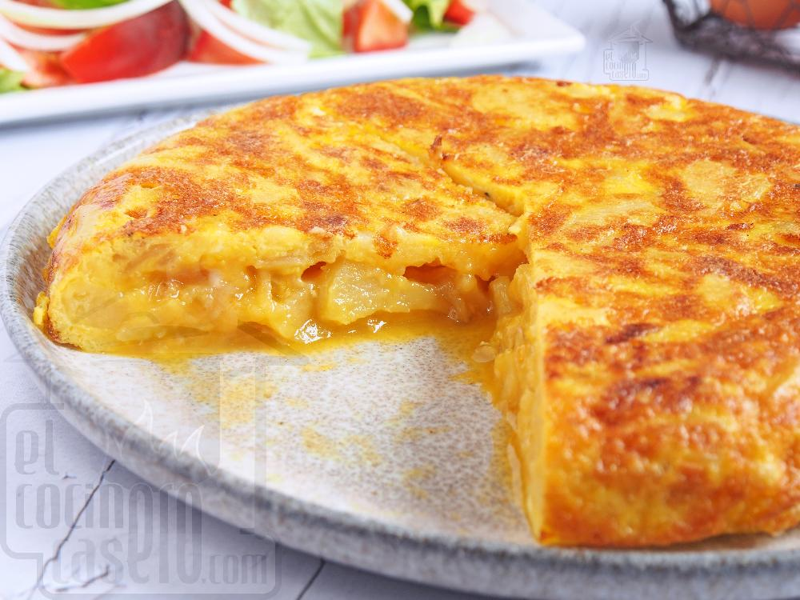

Tortilla de patatas
Receta de tortilla de patatas caseras.

Ingredientes
- 5 huevos
- 500 g de patatas
- 1 cebolla (opcional)
- Sal
- Aceite de oliva virgen extra
Elaboración (Pasos)
- Pelar y cortar las patatas y la cebolla.
- Poner las pastatas y la cebolla en una salaten con aceite.
- Batir los huevos y añadirle las patatas y la cebolla.
- Servir en plato.